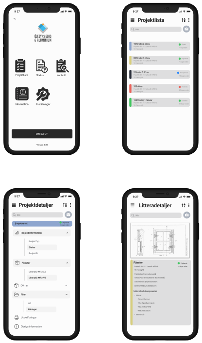

av Alice Johansson
September 18, 2024
Case Bright Sight har Öjebyns Glas och Aluminium, ett familjeföretag med 75 anställda som tillverkar skräddarsydda fönster och dörrar, som projektägare. Målet med projektet är att skapa en ny applikation som kombinerar information från det affärssystem och ritningsprogram som företaget använder och möjliggör för de anställda att lätt överskåda den info som är relevant för deras roll och även utföra vissa handlingar såsom “egenkontroller” på fönster och dörrar efter de tillverkats och monterats.
Vi har haft ett flertal möten inom gruppen samt två möten med projektägarna. Under mötena inom gruppen så diskuterades en gemensam syn på projektets mål, en plan för den närmsta tiden samt för projektet i allmänhet sattes upp och roller fördelades enligt följande:
Front-end-gruppen: Alice, Meba, Hannes, Robin (Teamledare : Hannes)
Back-end-gruppen: Mattias, Helge, Elvira, Jenny (Teamledare : Mattias)
Projektledare: Jenny
Deploymentansvarig: Robin
Mjukvaruarkitekt: Robin
Bloggansvarig: Alice
På separata möten för back-end- och front-end-grupperna så arbetade back-end-gruppen på planeringen och en första rapport och presentation samtidigt som front-end-gruppen skapade en mock-up för designen av applikationen att visa och diskutera med Öjebyns G&A varav några bilder kan ses här nedanför:
Några bilder ur den mock-up som presenterades för företaget. Den kommer härnäst uppdateras baserat på deras återkoppling.
Det första mötet med projektägarna skedde digitalt och innehöll en presentation av företaget samt diskussion av vissa frågeställningar vi i gruppen tagit fram. Det andra mötet var på plats i Öjebyn och där fick vi en rundtur av fabriken och hade ett längre möte där även företagets IT-experter var med och där en gemensam vision av applikationen mellan gruppen och projektägarna till stor del kunde arbetas fram. Det viktigaste som kom av detta möte var att ett tidigare krav på verktyg för eftermarknadshantering i applikation kunde läggas på is vilket kommer öka mängden utvecklingstid som kan läggas på de andra funktionerna.
Under de kommande dagarna kommer snabb och direkt kommunikation etableras med Öjebyns Glas och Aluminium genom en gemensam Slack-kanal. Back-end-gruppen kommer även få tillgång till en eller flera VM på en server i Öjebyn där de kommer kunna prova att ta information från affärssystemet och ritningsprogrammet så fort APIerna till dessa har hunnit aktiveras vilket i bägge fallen kräver att projektägarna kontaktar de som tillhandahåller mjukvaran. Github-projekt för både back-end och front-end kommer skapas och de slutgiltiga besluten om vilka programmeringsspråk och verktyg som kommer användas bör tas.
Front-end-gruppen lär fortsätta arbeta på designen av applikationen, göra fler mock-up-bilder och ändra på existerande baserat på den återkoppling som erhölls när de visades på det andra mötet med projektägarna. De bör även snart kunna börja bygga upp ramen till applikationen då de flesta grundläggande designfrågorna nu är lösta.
Den här bloggen kommer också att skapas vilket kommer kräva både webbdesignsarbete samt att en lösning för hosting bestäms. Om detta läses på en blogg så är den saken redan löst. :) Planen är att kommande blogginlägg kommer vara kortare än detta och släppas förhållandevis ofta så att de kan innehålla färskare och mer detaljerad information.